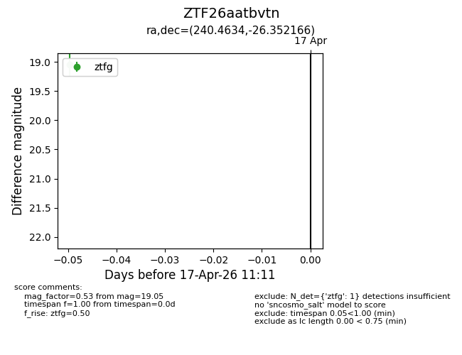
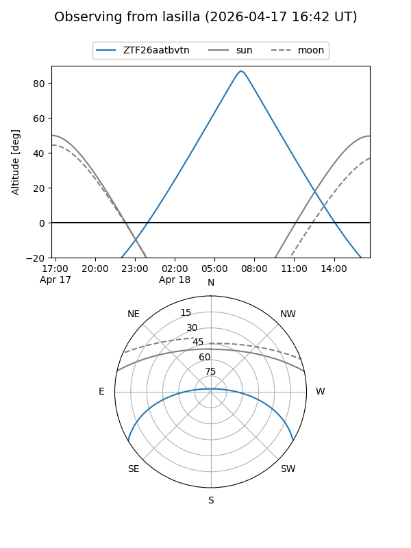
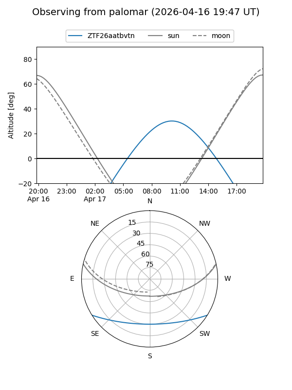
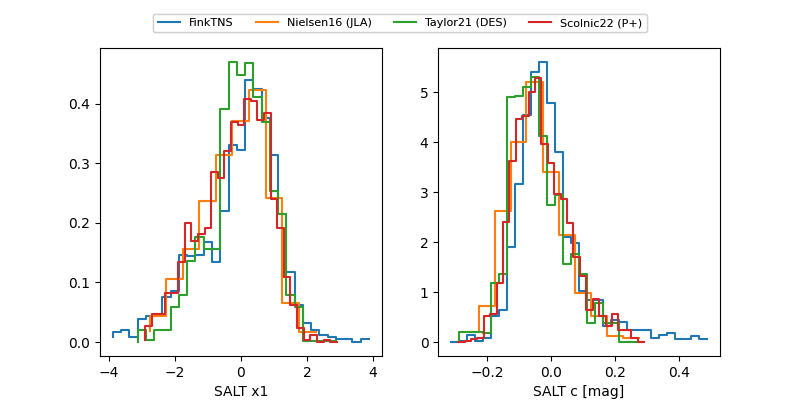

ZTF26aatbvtn
Target ZTF26aatbvtn at 2026-04-17 11:19
Aliases and brokers:
FINK: link
Lasair: link
ALeRCE: link
alt names
ZTF26aatbvtn (ztf,fink_ztf)
Coordinates:
equatorial (ra, dec) = 240.4634,-26.35217
equatorial (HMS+DMS) = 16:01:51.21,-26:21:07.80
galactic (l, b) = (347.5537,+19.59155)
Flags:
Photometry:
last ztfg=19.05
1 ztfg detections
Lightcurve

Visibility


Additional plots
